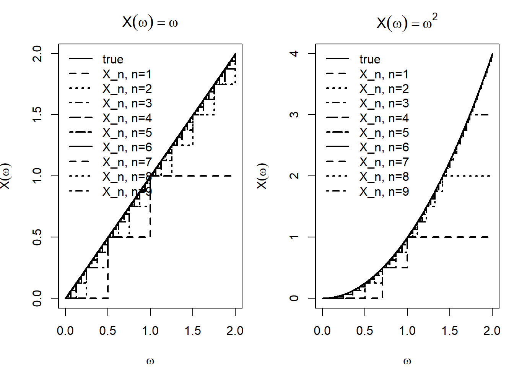

Chap 5, Integration and Expectation
Summary
(2026-01-30) I want to summarize the main idea from Sections 5.1 to 5.2.
Simple functions as the basic building blocks
We start from simple functions (finite range), i.e. functions of the form \[ X=\sum_{i=1}^m a_i\,\mathbf{1}_{A_i}, \] which are the “basic blocks” because they’re easy to compute with, and they’re measurable (so they are random variables too).
Theorem 5.1.1 (Measurability Theorem): approximation by simple functions
In Theorem 5.1.1 (Measurability Theorem) (for \(X(\omega)\ge 0\)), we prove that a random variable \(X\) is measurable iff it can be approximated from below by an increasing sequence of simple functions: \[ 0\le X_n \uparrow X. \]
The construction idea is to slice the range of \(X\) into many small bins, and also truncate at level \(n\). Using a dyadic mesh \(2^{-n}\) (or more generally \(b^{-n}\)) is important because these partitions are nested, so the approximation can be made monotone increasing.
I tried to slice with step size \(1/n\), but that does not guarantee \(X_n\uparrow X\) since the partitions aren’t nested (so the “rounded-down” approximations can go down when \(n\) changes).
Defining expectation via extension from simple functions
Expectation is first defined for simple functions in the most elementary way: \[ E(X)=\sum_{i=1}^m a_i\,P(A_i), \] which is exactly “sum of (possible value) \(\times\) (its probability).”
Then for a general measurable \(X\ge 0\), we extend the definition by approximation: pick simple \(X_n\uparrow X\) and set \[ E(X):=\lim_{n\to\infty}E(X_n). \]
A key point is that this limit is well-defined (it doesn’t depend on the particular approximating sequence), so expectation becomes a legitimate object for all nonnegative measurable random variables. This is a classic analysis strategy: define something on a handy class, then extend it to a larger class via limits.
Why monotone convergence is central
This viewpoint also explains why monotone convergence matters: if \(0\le X_n\uparrow X\), then \[ E(X_n)\uparrow E(X), \] so under monotone increase we can exchange “take limits” and “take expectations.” Conceptually, the proof (and the entire construction) keeps returning to the base case of simple functions.
Markov’s inequality: probability via indicators and expectation
Finally, in Markov’s inequality, the indicator function is the bridge between probability and expectation: since \[ \mathbf{1}_{\{X\ge a\}}\le \frac{X}{a}\quad (X\ge 0), \] we get \[ P(X\ge a)=E\!\left(\mathbf{1}_{\{X\ge a\}}\right)\le \frac{E(X)}{a}. \]
This is a clean example of how expectations control probabilities by rewriting events as indicator random variables.
Also here is a R code to illustrate the approximating process
## Simple-function approximation:
## X_n = floor(2^n * X) / 2^n on {X < n}, and = n on {X >= n}
Xn_simple <- function(X, n) {
pmin(n, floor((2^n) * X) / (2^n))
}
## Grid for omega (pick 0..2 so truncation is visible for small n)
omega <- seq(0, 2, length.out = 4001)
## Two target functions
X_id <- omega # X(ω) = ω
X_sq <- omega^2 # X(ω) = ω^2
## Choose which approximations to show
n_vec <- 1:9
## Compute approximations
approx_id <- sapply(n_vec, function(n) Xn_simple(X_id, n))
approx_sq <- sapply(n_vec, function(n) Xn_simple(X_sq, n))
## ---- Plot: X(ω)=ω ----
par(mfrow = c(1, 2), mar = c(4, 4, 3, 1))
plot(omega, X_id, type = "l", lwd = 2,
xlab = expression(omega), ylab = expression(X(omega)),
main = expression(X(omega) == omega))
for (i in seq_along(n_vec)) {
lines(omega, approx_id[, i], type = "s", lty = i + 1, lwd = 2)
}
legend("topleft",
legend = c("true", paste0("X_n, n=", n_vec)),
lty = c(1, 2:(length(n_vec) + 1)), lwd = 2, bty = "n")
## ---- Plot: X(ω)=ω^2 ----
plot(omega, X_sq, type = "l", lwd = 2,
xlab = expression(omega), ylab = expression(X(omega)),
main = expression(X(omega) == omega^2))
for (i in seq_along(n_vec)) {
lines(omega, approx_sq[, i], type = "s", lty = i + 1, lwd = 2)
}
legend("topleft",
legend = c("true", paste0("X_n, n=", n_vec)),
lty = c(1, 2:(length(n_vec) + 1)), lwd = 2, bty = "n")
Ex 2
Argue without a computation that if \(X\in L_2\) and \(c\in\mathbb{R}\), then \(\operatorname{Var}(c)=0\) and \(\operatorname{Var}(X+c)=\operatorname{Var}(X)\).
\(\textbf{My idea:}\) If to argue without computation, I would say that for constant r.v. \(c\), it won’t change, so it has \(0\) variation, therefore \(\text{Var}(X+c)=\text{Var}(X)+\text{Var}(C)=\text{Var}(X)\).
\(\textbf{Answer:}\) For constant r.v. \(c\), it won’t change, so it has \(0\) variation, that is, \(E(c)=c\), and \(\text{Var}(c)=E(c-E(c))^2=E(0)^2=0\), for r.v. \(X+c\), we have \(E(X+c)=E(X)+E(c)=E(X)+c\), and \[ \begin{aligned} \text{Var}(X+c)&=E((X+c)-E(X+c))^2\\ &=E(X+c-E(X)-c)^2\\ &=E(X-E(X))^2=\text{Var}(X). \end{aligned} \] Further, \(X\in L_2\) ensure that the variance is finite.
\(\textbf{Note:}\) Additivity is not a general property.
Ex 4
Let \((X,Y)\) be uniformly distributed on the discrete points \((-1,0)\), \((1,0)\), \((0,1)\), \((0,-1)\). Verify \(X,Y\) are not independent but \(E(XY)=E(X)E(Y)\).
\(\textbf{My idea:}\) Since \(P(X=0,Y=1)=\frac{1}{4}\), and also \(P(X=0)=\frac{1}{2}\), \(P(Y=1)=\frac{1}{4}\), therefore \(P(X=0,Y=1)\neq P(X=0)P(Y=1)=\frac{1}{8}\), so \(X\), \(Y\) are not independent. Also, \[ \begin{aligned} &E(X)=-1\cdot P(X=-1)+1\cdot P(X=1)+0\cdot P(X=0)=-1\cdot \frac{1}{4}+1\cdot \frac{1}{4}+0\cdot \frac{1}{2}=0\\ &E(Y)=-1\cdot P(Y=-1)+1\cdot P(Y=1)+0\cdot P(Y=0)=-1\cdot \frac{1}{4}+1\cdot \frac{1}{4}+0\cdot \frac{1}{2}=0,\\ \end{aligned} \] for \(E(XY)\), since \(XY\) can only has value \(0\), so \(E(XY)=0\), therefore \(E(XY)=E(X)E(Y)\).
Ex 1
Consider the triangle with vertices \((-1,0)\), \((1,0)\), \((0,1)\) and suppose \((X_1,X_2)\) is a random vector uniformly distributed on this triangle. Compute \(E(X_1+X_2)\).
\(\textbf{My idea:}\) By linearity, \[ \begin{aligned} E(X_1+X_2)&=E(X_1)+E(X_2)\\ &=[-1\cdot P(X_1=-1)+1\cdot P(X_1=1)+0\cdot P(X_1=0)] +[0\cdot P(X_2=0)+0\cdot P(X_2=0)+1\cdot P(X_2=1)]\\ &=(-1\cdot\frac{1}{3}+1\cdot\frac{1}{3}+0\cdot\frac{1}{3})+ (0\cdot\frac{1}{3}+0\cdot\frac{1}{3}+1\cdot\frac{1}{3})\\ &=\frac{1}{3}. \end{aligned} \]
\(\textbf{Answer:}\) Since \((X_1,X_2)\) is uniform on the triangle with vertices \((-1,0),(1,0),(0,1)\), its mean is the centroid of the triangle: \[ E(X_1,X_2)=\left(\frac{-1+1+0}{3},\frac{0+0+1}{3}\right)=(0,\tfrac13). \] Hence \[ E(X_1+X_2)=E(X_1)+E(X_2)=0+\tfrac13=\tfrac13. \]
\(\textbf{Note:}\) \(X_1\) and \(X_2\) are continuous r.v.s, we cannot use something like \(P(X_1=-1)\) since it must be \(0\).
Ex 3
Refer to Renyi’s theorem 4.3.1 in Chapter 4. Let \[ L_1:=\inf\{j\ge 2:\ X_j \text{ is a record}\}. \] Check \(E(L_1)=\infty\).
\(\textbf{My idea:}\) For any integer \(k\), we have \(L^{-1}_1(k)=\{X_k\ \text{is a record}\}\), so \(L_1\) is a r.v., and according to Renyi’s theorem, \(P(L_1=k)=\frac{1}{k}\), for \(E(L_1)\), we need to find a sequence of simple function that approach to \(L_1\), naturally, we choose \(L_1^{(n)}=\inf\{2\leq j\leq n:\ X_j\ \text{is a record}\}\), so \(L_1^{(n)}\uparrow L_1\) and \(E(L_1^{(n)})=\sum_{k=2}^n kP(L_1^{(n)}=k)=\sum_{k=2}^n1=n-1\), then according to the definition of expectation, \(E(L_1)=\lim_{n\to\infty}E(L_1^{(n)})=\lim_{n\to\infty}(n-1)=\infty\).
\(\textbf{Answer:}\) Let \(A_n=\{X_n\ \text{is a record}\}\in\mathcal{B}\), according to Renyi’s theorem, \(A_n\) are independent, and for \(n\geq2\) \(\{L_1\leq n\}=\bigcup_{j=2}^{n}A_j\in\mathcal{B}\), so \(L_1\) is a r.v., also \[ \begin{aligned} P(L_1=n)&=P(\bigcap_{k=2}^{n-1}\{X_k\ \text{is not a record}\}\cap\{X_n\ \text{is a record}\})\\ &=P(\bigcap_{k=2}^{n-1}A_k^c\cap A_n)\\ &=\prod_{k=2}^{n-1}P(A_k^c)\cdot P(A_n)\\ &=\frac{1}{n}\prod_{k=2}^{n-1}\frac{k-1}{k}=\frac{1}{n(n-1)},\\ \end{aligned} \] formally, we can let \(L_1^{(n)}=\min\{L_1,n\}\), then \(L_1^{(n)}\uparrow L_1\), but it is not necessary, finally we have \[ E(L_1)=\sum_{n=2}^{\infty}nP(L_1=n)=\sum_{n=2}^\infty\frac{1}{n-1}=\infty. \]
\(\textbf{Note:}\) When we discuss \(\{L_1=n\}\), note that \(X_2,X_3,\dots X_{n-1}\) cannot be record, and also, if we write \(L_1^{(n)}=\inf\{2\leq j\leq n:\ X_j\ \text{is a record}\}\), there could be not record, so it may take \(\infty\) as value.